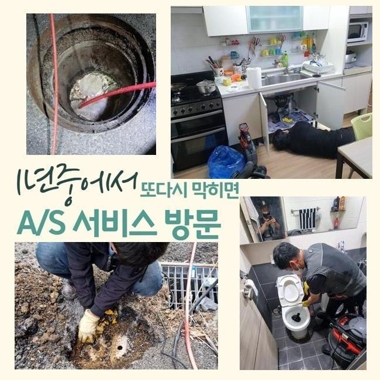
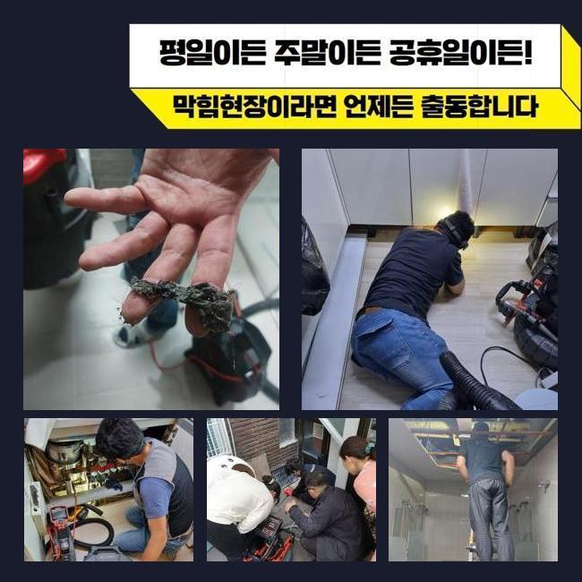
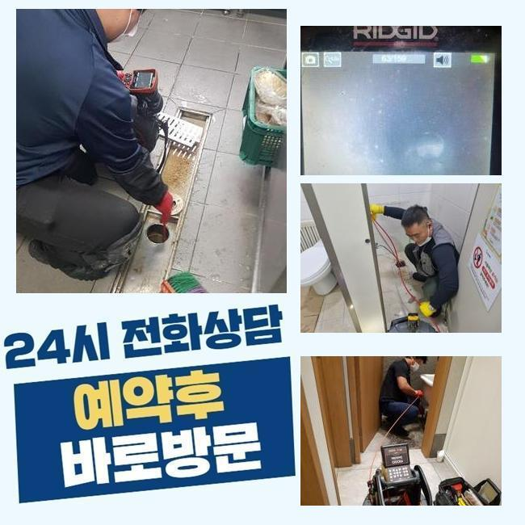
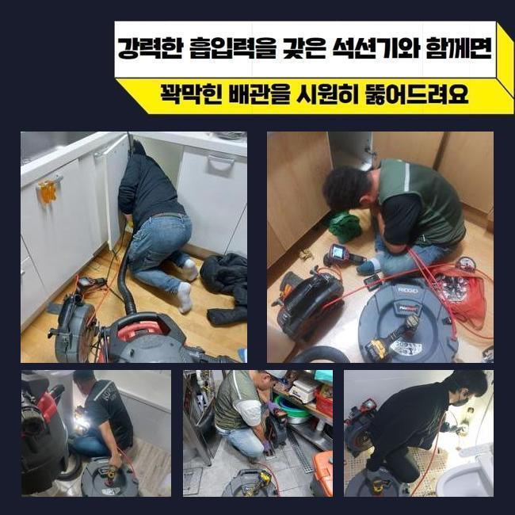
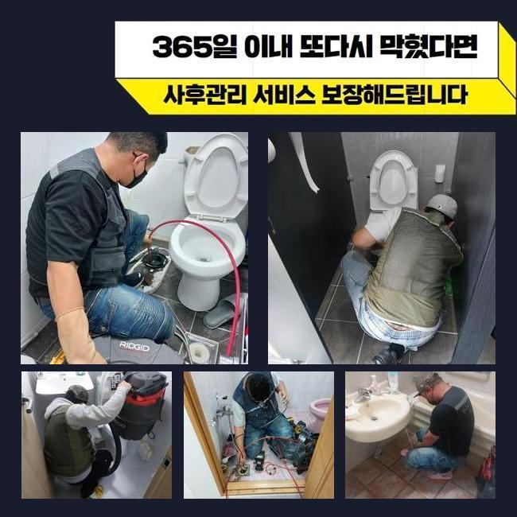

🏠 용산 원효로4가오수관뚫음 용산동6가 악취차단 설비출장
용인 하수구막힘 전문 시공 후기

📋 작업 개요
- 위치: 용인
- 서비스 유형: 하수구막힘, 배관막힘, 맨홀막힘, 역류해결, 뚫는업체, 배관청소, 고압세척, 악취차단
- 작업 일시: 2025. 3. 6. 11:16
- 업체명: 하수구수사대 (010-5615-2118)
🔍 문제 상황
용산 원효로4가오수관뚫음 용산동6가 악취차단 설비출장
근처의 건물에서 하수구의 불능으로 운영이 힘든 상태라고 조속히 고쳐주면 좋겠다는 신청을 받고 다녀왔습니다
식품을 판매하는 곳에서는 하수구 출입구가 폐쇄되는 이슈때문에 주방의 집기와 설비를 활용하지 못하게 된다면 준비부터 조리도 하지 못하니 장사를 할 수가 없겠죠
하수구를 빠르게 뚫어줘야 장사하시는 분의 손실을 감축할 수 있기 때문에 지체없이 출장가서 보완해드린다고 약속드렸어요
맞이해주신 고객님께서는 배수구가 지장이 생긴건지 통수가 미미하게 진행되고 깊숙하게 자리해 있는 하수구 물이 올라오는 현상도 빚어지는 사태라고 하셨습니다
가까이서 점검할 수 있는 바닥에 난 배수구멍을 먼저 체크하고 옥외 배관로까지도 관통시켜드려야 하기에 간단하지만은 않은 시공건이 될 듯 했습니다
계획적인 접근을 위하여 현재 처한 문제점들을 두루 모아서 생각해보고 시공 시간에 대해서 계산해서 원하시면 알려드립니다
관로의 생김새가 독특하거나 막힌 구간이 다수라면 말끔하게 고치려면 시간이 더 필요할 때가 있습니다
야외에 설치된 하수구 속을 조사해보려 봤더니 덮개부터 녹이 일어나 있는 상태였고 맨홀 옆의 바닥부분도 습기가 차서 더러워져 있었습니다
시설에 대한 훼손이 최대한 없을 수 있도록 조심스러운 태도로 업무에 들어가려고 생각하고 착수하게 됐습니다

🔎 원인 분석
💡 전문가 진단: 정밀 진단 장비를 사용하여 슬러지의 고착 여부를 판명하고 타격/세척 작업을 실시했습니다.
뚜껑을 들어내자마자 보이는 건 지저분한 오물들이 눈에 들어왔습니다
혼탁한 슬러지 덩어리가 부유하고 있는 것을 바로 확인할 수 있는 상황이었으므로 진입부의 청소 먼저 들어가서 안을 닦아내야 했습니다
처음에는 주방 설비부터 물길을 만들어준 다음에 관로를 보여주는 내시경 기기를 넣어서 내측을 관찰해봐요
크고 작은 관로들이 어떤 식으로 결합되어 있는지 세부적으로 알아낸 다음 강한 물로 타격해서 배관 안에 자리한 유분기 어린 슬러지를 세척하기로 단계를 구상했습니다
이 수준에서는 아무리 카메라를 넣어봤자 어떤 것도 탐지할 수 없을 듯 해서서 잔수를 제거하는 석션 단계를 선행해야 했습니다
석션장비는 청소기같이 생긴 장치인데 혼탁하게 오염된 하수와 오물들을 강한 힘으로 한 곳으로 모아주는 역할을 담당하는데요
강력한 끌어당기는 힘으로 묽은 물질이라면 빠르게 기다란 석션 내부에 들어가서 누적됩니다
찐득찐득한 제형이라거나 견고하게 접착된 물질들은 잘 떨어지지 못하니 석션 단독 이용으로는 하수구를 완전히 관통시키는 경우가 미미합니다
배관의 사이즈와 상관없이 변함없이 석션기를 꼭 가동하고 있을 정도로 배관의 말끔한 세척을 처리하려면 반드시 써야하는 통과의례에요
석션을 돌려서 배관 안을 세척해준 이후에 다음으로 카메라를 내려보냈죠
이 카메라의 기능으로는 깊숙한 영역에 매립된 채 독특하게 배치된 파이프라도 속속들이 살펴보면서 오염물질 종류와 하수관의 컨디션에 대해서 체크해 볼 수 있게 됩니다

🔧 작업 과정
신중하게 모니터링을 해보니 기름기가 잔뜩 고인 유막이 많은 상태였습니다
이 부분들이 아무래도 위급한 연락을 주신 식당의 주범일 것 같다는 추론이 되었습니다
조리하다가 바닥 배관으로 조금씩 유실된 기름기가 내부 공간을 채워갔고 접착되어 액상인 수돗물 마저 빠져나갈 틈이 없다보니 내부 압력이 변화하면서 역류까지 일어난 거였네요
내부배관을 석션기로 세정해 나가면서 하수들이 집합하는 야외 쪽의 하수구도 개선을 해줘야 했습니다
샤프트를 말씀드리자면 장비의 예리한 금속의 헤드가 장착되어 있는 형상입니다
석션의 흡입으로는 역부족인 크기가 큰 침전물이나 관로에 오래 눌어붙어있는 흡착물질을 긁어주거나 잘게 쪼갤 수 있어요
이런 샤프트기기와 잔처리를 하는 석션 관찰 내시경까지 두루 활용해야 하자없는 작업이 안정적으로 완성되며 꽉 채워져있는 수로의 역시도 뚫어낼 수 있습니다
세부적인 조사에 착수해보았더니 복잡다단한 케이스여서 고압수를 쏘는 활동도 추가할 필요가 보였는데요
흡입하고 긁어주는 작업으로 물길이 제법 좋아졌다는 걸 체감하고 다음으로 고압수 청소기계를 넣어서 속시원하게 청소해 나갔습니다
강한 압력의 물을 내보내주는 노즐을 잘 조정한 다음에 오물이 집합화가 되어있는 섹션을 매끈하게 만들어나갔습니다
그 결과 둥둥 떠다니면서 상당한 규모로 성장했었던 슬러지 물질을 타개했습니다
시공 전에 카메라 기기로 고장난 배관의 원인과 현황을 차분하게 관찰한 다음에 다양한 스킬을 통한 배관청소를 통수를 방해하던 장애물들을 빼내고 없애는 것에 좋은 결과를 만들어냈습니다
오늘의 프로세스를 끝내고 개선된 내부 모습을 보니 새로운 배관으로 재탄생한듯 오염물질들도 너는 사라졌었고 오염됐던 벽면도 스케일링을 해준 덕에 저 아래에 이르는 관로 흐름도 인식할 수 있게 됐네요
배수로 안에 뿌옇게 찰랑대던 물도 완전히 싹 내려갔으며 입자가 작은 내부 오염원으로부터 해방됐어요
아무래도 레스토랑이나 식당은는 식품을 다루는 양이 최소한 곱절은 많으므로 사용 중에 하수구가 막히는 일이 더 많기도 합니다
양념 덩어리나 음식물을 비롯해 미처 닦아내지 못한 기름기가 배관 속에 유입되지 않도록 실제 이용자분께서도 신경써서 사용하시면 좋겠죠
마감 단계에 이르렀다면 물의 폐기 과정을 확인하면서 시공이 괜찮게 끝난건지 검사를 해보게 되는데요


✅ 작업 완료
집 안에서 물기를 모아서 폐기하면서 깨끗하게 변모한 옥외 하수시설까지 중간에 멈추는 느낌 없이 유연하게 흘러나가는지 매의 눈으로 살펴보는 겁니다
옥외까지 내려보낸 물이 옥외 관로로 속속들이 모여드는 게 보이니 비로소 마감해도 될 듯 했어요
하수배관이 정상화가 됐으니 질의응답이 있다면 친절하게 받고 장비를 챙겨 나왔습니다
하수흐름이 끊긴다면 비용을 절약하려는 일념으로 셀프 뚫음을 시도하시다가 관내 상태가 더 나빠질 수 있습니다
막힘 발발 시 바로 전화주신다면 얼른 장소로 향하여 물막힘이 빚어진 사유부터 추적해서 없애드리니 믿고 맡겨주신다면 좋겠습니다



⚠️ 하수구 배관 막힘 예방 및 관리 가이드
- ✅ 머리카락, 비닐, 물티슈 등 물에 분해되지 않는 이물질은 하수구 유입을 절대 금지해 주세요.
- ✅ 하수구 거름망을 씌우고 모여진 이물질은 주기적으로 쓰레기통에 바로 비워주셔야 합니다.
- ✅ 배관 노후가 심할 경우 이물질이 더 쉽게 걸리므로 주기적인 배관 세척(고압세척 등)을 권장합니다.
- ✅ 작업 후 1년 이내 재발 시 하수구수사대에서 무상 A/S 보증 서비스를 제공합니다.
💡 핵심 정리
- 확실한 장비 작업(내시경 점검 및 샤프트 스케일링)으로 원인을 뿌리 뽑습니다.
- 작업 후 1년 이내에 동일한 부위 재발 시 100% 무상 A/S 서비스를 보장합니다.
- 서울 · 경기 · 인천 전 지역에 24시간 언제든 긴급 출동할 수 있도록 항시 대기 중입니다.
❓ 자주 묻는 질문 (FAQ)
🚨 용인 하수구막힘 문제로 고민이신가요?
정확한 원인 진단과 확실한 시공으로 재발 없는 해결을 약속드립니다.
24시간 긴급 출동 | 서울 · 경기 · 인천 전지역 | 1년 내 재발 시 무상 A/S